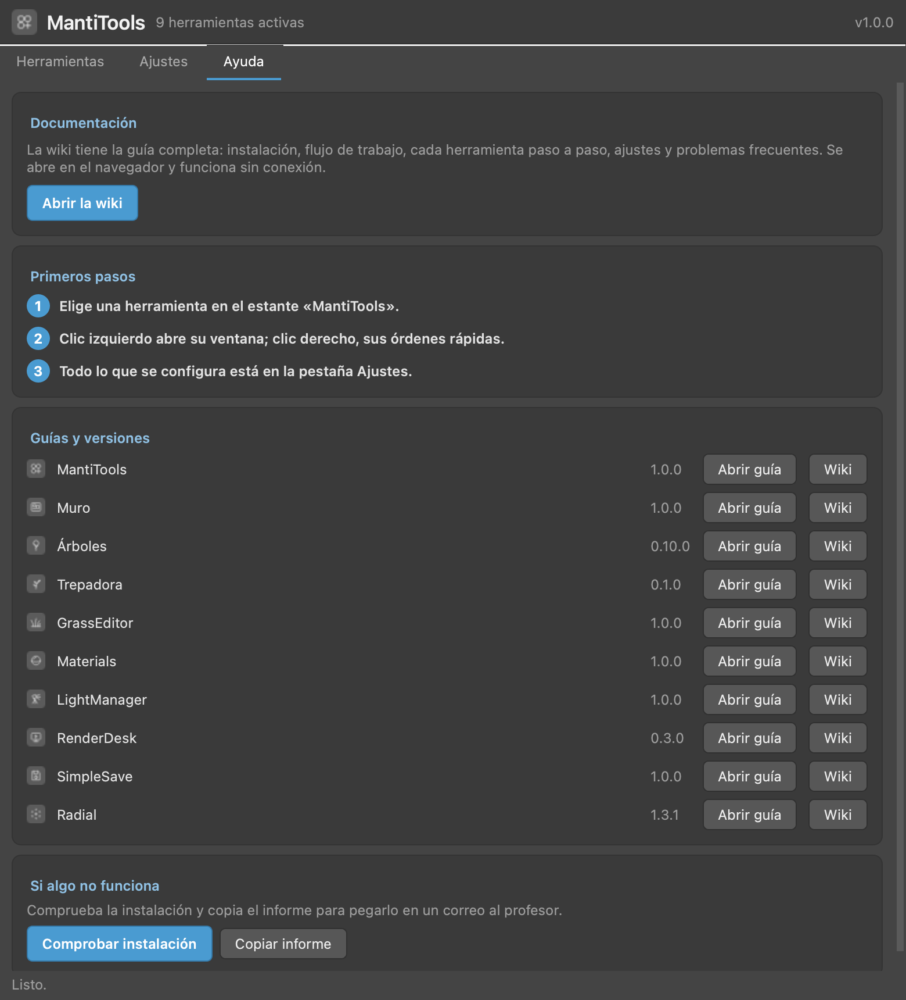

Ventana central
La ventana central reúne todo el pack en un solo panel de Maya: abrir cualquier herramienta, configurar todas y encontrar ayuda. Es un panel acoplable, así que puedes dejarlo flotando o pegarlo a un lado de la interfaz como cualquier otra ventana de Maya.
Cómo se abre: el icono de cuadros del estante MantiTools (el penúltimo), o MantiTools → Herramientas / Ajustes / Ayuda (cada entrada la abre en su pestaña).

Cabecera#
Arriba están el icono de MantiTools, cuántas herramientas hay activas y la versión del pack. El recuento cambia al activar o desactivar herramientas en Ajustes → General.
Pestaña Herramientas#
Una tarjeta por herramienta, en el mismo orden que el estante.
| Parte de la tarjeta | Qué es |
|---|---|
| Miniatura con el icono | El dibujo de la herramienta. La raya de color de debajo es su color, el mismo del estante. |
| Nombre y versión | La versión que trae el pack (la fija versiones.json). |
| Descripción | Qué hace, en una línea. |
| Botón principal | La acción principal: lo mismo que el clic izquierdo en el estante. |
| ··· | El resto de órdenes: lo mismo que el clic derecho en el estante. |
| Activar | Solo aparece si la herramienta está desactivada. |
Si una herramienta no ha podido cargar, la tarjeta lo dice en amarillo. Mira Problemas y preguntas.
Pestaña Ajustes#

A la izquierda, la lista de páginas: General y una por herramienta. A la derecha, los ajustes de la página elegida, agrupados en tarjetas. Los cambios se guardan al momento; no hay botón de aceptar.
Página General#
| Sección | Ajuste | Qué hace |
|---|---|---|
| Idioma | Idioma de las herramientas | Cambia el idioma de todas a la vez. Las que aún no están traducidas siguen en español. |
| Herramientas activas | Una casilla por herramienta | Una herramienta desactivada no se carga: no tiene submenú ni icono en el estante. Se nota al reiniciar Maya. |
| Carpeta de clase | Ruta y botón ··· | La carpeta que comparte el profesor. Dentro, cada herramienta busca su subcarpeta y un mantitools_clase.json con lo que se fija para el grupo. Ver Carpeta de clase. |
| Estante | Recrear estante | Si borraste el estante o le faltan iconos, lo vuelve a crear. |
Páginas de cada herramienta#
Cada página tiene los ajustes generales de esa herramienta: carpetas, resoluciones, autoguardado, comportamiento del menú… La lista completa, con valores y explicación, está en Ajustes, y cada página de herramienta de esta wiki los explica en su sección Ajustes.
Algunas herramientas conservan además su propia ventana de opciones, porque se ajustan mejor viendo el resultado:
- Radial: Ajustes de tamaño en vivo, para cambiar el tamaño del menú mientras lo ves.
- Materials: su pestaña Ajustes, dentro de su ventana.
Un ajuste con candado lo ha fijado el profesor en la carpeta de clase y no se puede cambiar desde aquí.
Pestaña Ayuda#


| Tarjeta | Qué tiene |
|---|---|
| Documentación | Abrir la wiki: esta wiki, en el navegador. |
| Primeros pasos | Los tres pasos básicos para empezar. |
| Guías y versiones | Por cada herramienta: su versión, Abrir guía (la guía para alumnos que trae cada una) y Wiki (su página en esta wiki). |
| Si algo no funciona | Comprobar instalación y Copiar informe. El informe aparece debajo; las líneas con «!» son avisos. |
Ver también#
- Ajustes: referencia completa.
- Primeros pasos
- Problemas y preguntas